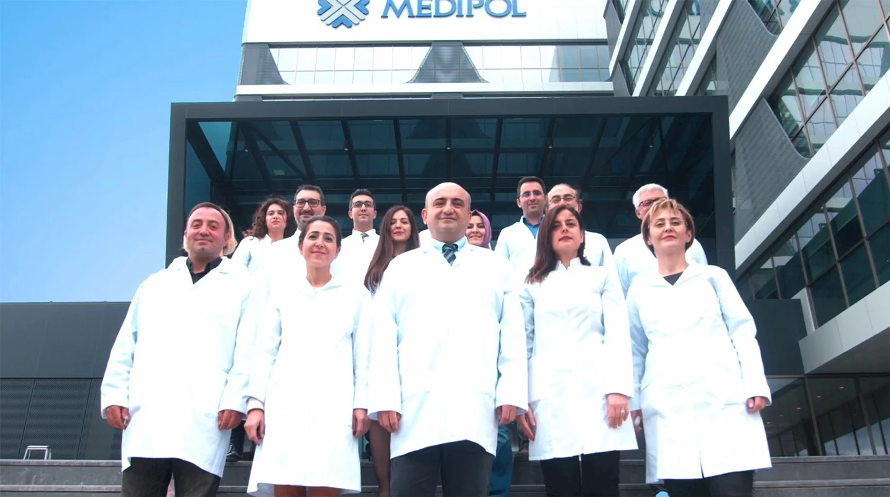

Medipol Sağlık Grubu, 2024 yılından bu yana güçlü sağlık kadrosu, tıp teknolojisinde en ileri donanımlarıyla, tüm dallarda topluma hizmet vermektedir.

Birbirinden değerli alanında uzman güçlü doktor kadromuzla hizmetinizdeyiz.
Cerrahi Tıp Birimleri
| •Anestezi ve Reanimasyon |
•Beyin ve Sinir Cerrahisi |
•Çocuk Cerrahisi |
•Genel Cerrahi |
| •Göğüs Cerrahisi |
•Göz Hastalıkları |
•Kadın Hastalıkları ve Doğum |
•Kalp Damar Cerrahisi |
| •Kulak Burun Boğaz Hastalıkları |
•Obezite ve Obezite Cerrahisi |
•Organ Nakli |
•Ortopedi ve Travmatoloji |
| •Perinatoloji |
•Patoloji |
•Plastik ve Rekonstrüktif Cerrahi |
•Tüp Bebek Merkezi |
| •Üroloji |
•Jinekolojik Onkoloji |
•Onkolojik(Kanser)Cerrahisi |
•Robotik Cerrahi |
| •Üroonkoloji ve Rekonstrüktif |
•Üretra Cerrahisi |
•Taş Hastalıkları ve Endoüroloji |
•Fonksiyonel Üroloji ve Nöro-üroloji |
| •Üriner Sistem Taş Hastalıkları |
•Skolyoz ve Omurga Cerrahisi |
•Çocuk Göz Hastalıkları |
•El Cerrahisi |
| •Çocuk Ürolojisi |
Dahili Tıp Birimleri
| •Acil Tıp |
•Aile Hekimliği |
•Akupunktur |
•Algoloji |
| •Çocuk Endokrinoloji |
•Çocuk Enfeksiyon |
•Çocuk Göğüs Hastalıkları |
•Çocuk Hematoloji ve Onkoloji |
| •Çocuk Sağlığı ve Hastalıkları |
•Çocuk İmmünoloji ve Alerji |
•Çocuk Ruh Sağlığı ve Hastalıkları |
•Çocuk Gastroenteroloji |
| •Çocuk Gelişimi |
•Çocuk Kardiyolojisi |
•Çocuk Nörolojisi |
•Çocuk Nefrolojisi |
| •Çocuk Onkolojisi |
•Çocuk Psikiyatri |
•Çocuk Psikoloji |
•Beslenme ve Diyet |
| •Dermatoloji |
•Endokrinoloji ve Metabolizma |
•Enfeksiyon Hastalıkları |
•Fiziksel Tıp ve Rehabilitasyon |
| •Gastroenteroloji |
•Geleneksel ve Tamamlayıcı Tıp |
•Göğüs Hastalıkları |
•Hematoloji |
| •Hemşirelik Hizmetleri |
•İç Hastalıkları |
•İmmünoloji ve Alerji Hastalıkları |
•Kardiyoloji |
| •Kemoterapi |
•Nefroloji |
•Nöroloji |
•Nükleer Tıp |
| •Psikoloji |
•Radyasyon Onkoloji |
•Romatoloji |
•Ruh Sağlığı Ve Hastalıkları |
| •Tıbbi Onkoloji |
•Yeni Doğan |
•Geriatri |
•Kemik İliği Merkezi (Pediatrik) |
| •Kemik İliği Merkezi (Erişkin) |
•Kan Transfüzyon |
•Terapötik Aferez |
•Hafıza Merkezi |
Diş Hekimliği
| •Ağız ve Diş Sağlığı |
•Ağız Diş ve Çene Cerrahisi |
•Ağız diş ve Çene Radyolojisi |
•Diş Beyazlatma |
| •Diş Tedavi |
•Endodonti |
•İmplant Tedavisi |
•Ortodonti |
| •Pedodonti |
•Periodontoloji |
•Restoratif Diş Tedavisi |
•Protetik Diş Tedavisi |
Laboratuvar
| •Tıbbi Biyokimya |
•Havacılık Tıp Merkezi |
•Tıbbi Mikrobiyoloji |
|